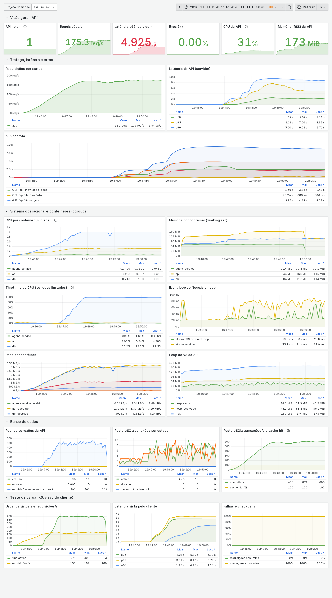
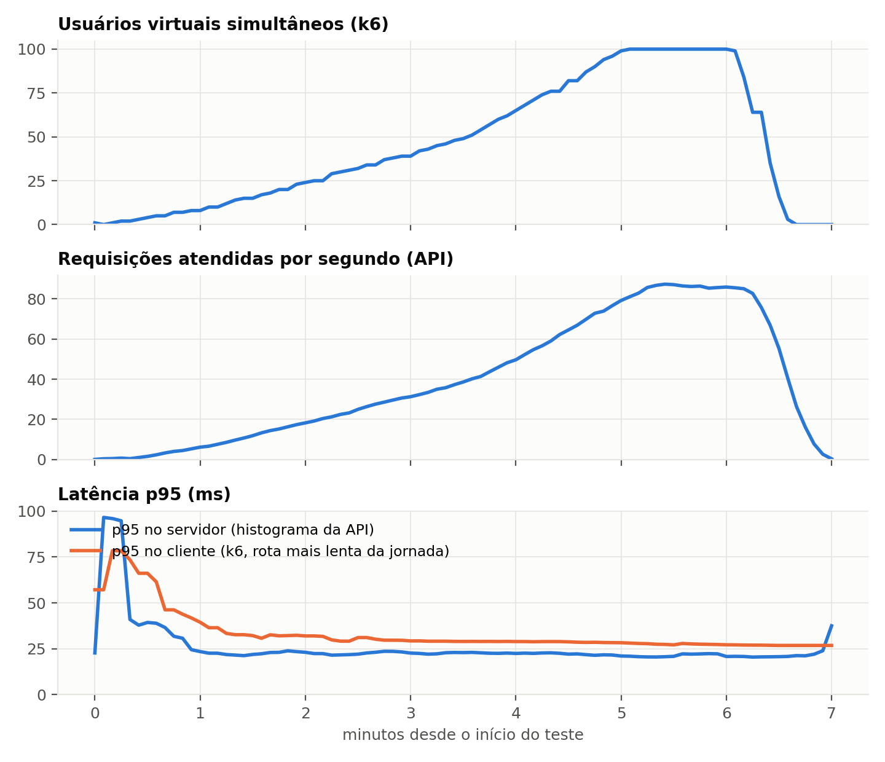
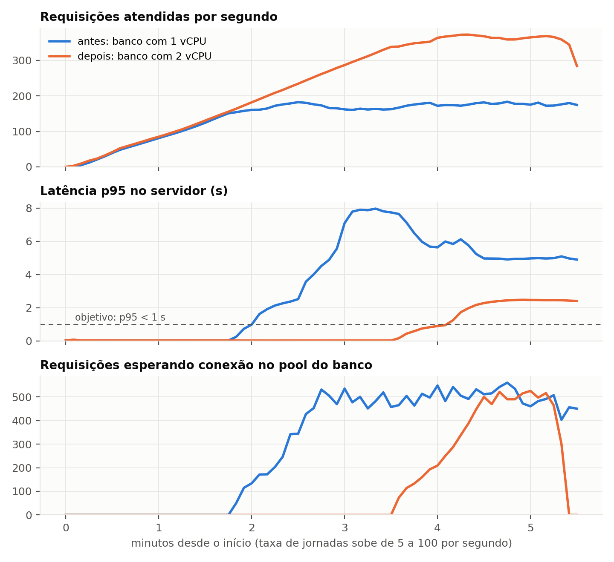
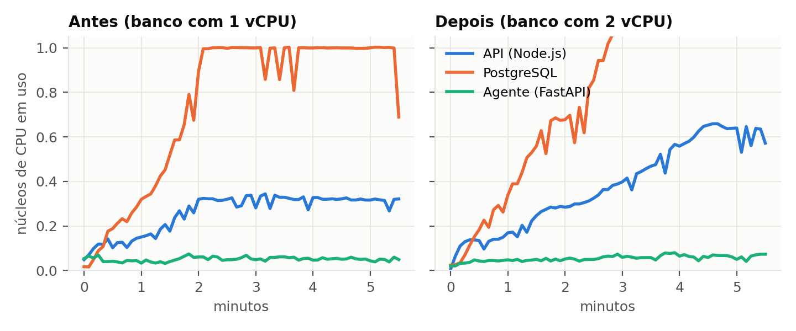
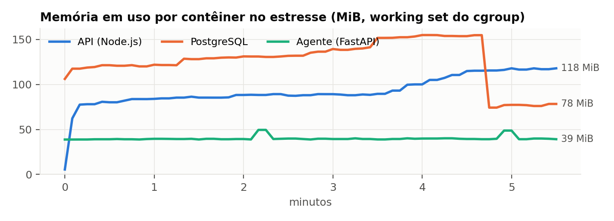
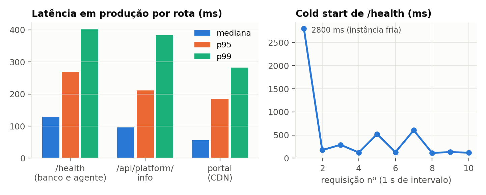

Fundação Escola de Comércio Álvares Penteado — FECAP
Ciência da Computação · 5º semestre · 2º semestre de 2026
Sistemas Operacionais e Computação em Nuvem
Entrega 2 (final) — Projeto Interdisciplinar ASA
Agente para o Estudante · aplicativo mobile, portal web, API, serviço do agente e PostgreSQL em nuvem
| Integrante | RA | GitHub |
|---|---|---|
| Vinícius Nishimura Reis | 24026962 | @Vinishireis |
| Breno Costa | 24026753 | @brenocosta19 |
| Bruno Souza Lima | 24026560 | @BrunoSouza06 |
| Felipe Toshio Yamaschita | 24026779 | @Yamaschita |
São Paulo, 11 de novembro de 2026
A solução do grupo (ASA Conecta) está publicada e em uso. O portal e a API rodam na Vercel, na região de São
Paulo (gru1); o serviço do agente é uma função privada; o banco é PostgreSQL gerenciado no Supabase
(sa-east-1). Esta entrega acrescenta a camada que faltava para operar o sistema com segurança: métricas
no formato do Prometheus, painel e alertas, teste de carga com análise de gargalo, scripts de backup e de
restauração com ensaio, e a verificação automática do controle de acesso.
/health com banco e agente up, contrato 1.9,
modo institucional. Foram 13 verificações de acesso e transporte,
sem falha (TLS 1.3, HSTS, CSP, 401 sem token, agente sem rota pública).| Item pedido no enunciado | Onde está nesta entrega |
|---|---|
| Deploy da API, banco, serviço do agente e componentes auxiliares em nuvem | §2 e §3: Vercel (região gru1) + Supabase PostgreSQL (sa-east-1), verificados em produção |
| Empacotar API e dependências com Docker ou processo reproduzível; variáveis de ambiente; conexão com banco/armazenamento | §4: Dockerfiles multi-stage sem root, docker-compose.yml, vercel.json, .env.example, pool TLS |
| Logs estruturados, métricas de CPU/memória/latência/erros e painel ou relatório de monitoramento | §5: logs JSON (pino), GET /metrics, Prometheus + Grafana + cAdvisor + postgres-exporter, 8 alertas, este relatório |
| Teste de carga compatível com o escopo, análise de gargalos e ajustes | §6: rampa até 100 usuários, estresse até saturar, gargalo no PostgreSQL, ajuste e nova medição; carga leve em produção |
| Backup/restauração, gestão de segredos, controle de acesso e estratégia de recuperação | §7 e §8: scripts de backup/restauração/ensaio, inventário de segredos, 23 verificações de acesso, RPO/RTO por cenário |
| Formato: infraestrutura executável, código, relatório, evidências e endereço de acesso controlado | src/Entrega_2/Backend/observability/, api/src/observability/, evidencias/, §2 |
| Componente | Endereço | Acesso |
|---|---|---|
| Portal web (aluno, equipe ASA, administração) | https://asa-conecta.vercel.app | login obrigatório nas áreas /aluno, /asa e /admin; cookie HttpOnly + CSRF |
| API (app mobile e portal) | https://asa-conecta-api.vercel.app | JWT de 15 min (Bearer) + renovação; papéis e permissões por rota |
| Saúde (público, sem dados pessoais) | https://asa-conecta-api.vercel.app/health | aberto: só informa se banco e agente respondem |
| Aplicativo Android / Expo Go | https://asa-conecta.vercel.app/app | mesmo login da API |
| Serviço do agente | sem endereço público | só a API chama, pela ligação interna da Vercel, com AGENT_SERVICE_TOKEN |
| Painel de monitoramento (Grafana) e Prometheus | 127.0.0.1:3300 e 127.0.0.1:9090 no ambiente de operação | presos à interface local; senha do Grafana vem de segredo do Compose; sem acesso anônimo |
As credenciais de avaliação (contas de aluno, equipe e administração) são entregues aos professores de forma
privada, pelos integrantes, e não estão no repositório. O cadastro de aluno exige e-mail institucional
(@edu.fecap.br) e RA. As contas de equipe e de administração só são criadas por convite da
administração.
Figura 1 — Componentes em produção (acima) e o ambiente reproduzível com observabilidade (abaixo).
| Componente | Onde roda | Detalhes verificados |
|---|---|---|
| Portal web | Vercel CDN (projeto asa-conecta) | estático; CSP, HSTS e X-Frame-Options; /api é repassado à API (mesma origem para os cookies) |
| API | Vercel Functions, gru1 (cabeçalho x-vercel-id: gru1::gru1) | Express em Node.js 24; contrato 1.9; dataMode: institutional; sem estado entre requisições |
| Serviço do agente | mesma implantação, serviço agent | FastAPI; ligação interna gera AGENT_SERVICE_URL; motor de regras explicável |
| Banco | Supabase PostgreSQL, sa-east-1 | schema asa; papel da API asa_api só com DML; migrations 001–017; anexos em bytea no próprio banco |
| Tarefas agendadas | Vercel Cron | /api/internal/jobs/sla-scan e asa-match-collect, diárias, com CRON_SECRET |
| Push e atualização do app | Expo Push / EAS Update | canal production; token do Expo fica só no backend |
O mesmo código roda de três formas: função serverless na Vercel (src/index.ts), processo residente em
Docker (src/server.ts) e worker sem HTTP (src/worker.ts). A implantação na nuvem é
declarativa (vercel.json: região, serviços, ligação api→agent, duração máxima, crons). O ambiente local é
um docker compose up.
| Imagem | Base e build | Execução |
|---|---|---|
| API | node:24-alpine, multi-stage: npm ci + tsc no estágio de build; runtime só com dependências de produção | usuário node (uid 1000), HEALTHCHECK em /health, imagem de 196 MB |
| Agente | python:3.12-slim, pip install --no-cache-dir | usuário de sistema agent (uid 10001, sem shell), HEALTHCHECK, imagem de 161 MB |
| Banco (local) | postgres:16-alpine com volume nomeado | porta presa em 127.0.0.1; pg_stat_statements no ambiente de observabilidade |
Ajuste de segurança feito nesta entrega: as duas imagens rodavam como root
(uid=0). Agora rodam com usuários sem privilégio. A evidência
(evidencias/ambiente.json) mostra a saída de id e do ps dentro dos contêineres, e
os limites lidos do cgroup v2 (cpu.max e memory.max).
Variáveis de ambiente. A API valida tudo na inicialização com zod
(src/config/env.ts). Configuração inválida derruba a subida e lista os campos com problema. Os modelos
versionados (.env.example) só trazem nomes e valores de desenvolvimento. Os valores reais ficam nas
variáveis sensíveis da Vercel ou no .env local, que o .gitignore ignora. A nova variável
METRICS_TOKEN segue a mesma regra: tem pelo menos 24 caracteres e, sem ela, a rota
/metrics não existe.
Conexão com banco e armazenamento. Em produção a API usa o pooler do Supabase em modo sessão, com TLS e
DATABASE_POOL_MAX=3 por instância. Assim várias instâncias não esgotam o limite de conexões. O papel
asa_api tem statement_timeout de 30 s e não cria tabelas. As migrations rodam com outro
papel (asa_migrator). Os anexos de chamados ficam no PostgreSQL (bytea), então o backup do
banco também cobre os arquivos.
A API escreve uma linha JSON por evento (pino) com service, env, runtime,
request_id e correlation_id; o correlation_id é propagado até o agente. Toda
requisição termina com método, rota, status, duração e status: success|error. Senhas, tokens, cookies e
cabeçalho Authorization são substituídos por [REDACTED], e o conteúdo acadêmico nunca entra
no log. Exemplo real do ambiente de teste (evidencias/logs-api-amostra.jsonl):
{"level":30,"time":"2026-11-11T22:56:58.914Z","service":"api","env":"production","runtime":"server","request_id":"req-8f4c0fe3-367e-4f4c-89d3-94032420e082","correlation_id":"corr-d0cfef1e-0afb-4619-aed9-829b89656a89","user_id":"fa0089e2-152b-4741-932e-c104339bc2e5","method":"POST","path":"/api/assistant/message","http_status":200,"status":"success","duration_ms":15,"msg":"request completed"}
Em produção, os mesmos logs aparecem em Runtime Logs da Vercel, filtráveis por request_id,
nível e rota. Os erros 5xx são registrados com level: error, e os 401, 403 e 429 com
level: warn.
Novo endpoint GET /metrics (api/src/observability/metrics.ts, formato de texto do
Prometheus, sem dependências novas e coberto por 6 testes automatizados). A rota entra no rótulo pelo molde
(/api/agent/recommendations/:id), nunca pela URL real, para não vazar identificadores e manter a
cardinalidade baixa.
| Métrica | Tipo | Para que serve |
|---|---|---|
asa_http_requests_total{{method,route,status_code}} | contador | vazão e taxa de erros (4xx/5xx) por rota |
asa_http_request_duration_seconds | histograma | latência p50/p95/p99 por rota (11 faixas, de 5 ms a 10 s) |
process_cpu_seconds_total, process_resident_memory_bytes | contador / medidor | CPU e memória do processo Node.js |
nodejs_eventloop_lag_seconds, nodejs_heap_used_bytes | medidor | event loop bloqueado (CPU saturada) e heap do V8 |
asa_db_pool_connections{{state}} | medidor | conexões em uso/ociosas e requisições esperando conexão |
container_cpu_*, container_memory_* (cAdvisor) | contador / medidor | CPU, throttling e memória de cada contêiner, lidos dos cgroups do kernel |
pg_stat_* (postgres-exporter) | medidor | conexões por estado, transações/s, cache hit do banco |
O painel ASA Conecta — Observabilidade (Grafana 12, 26 painéis) e as regras de alerta do Prometheus são
provisionados como código (observability/grafana e observability/prometheus). Sobem com o
docker compose, sem configuração manual.

| Alerta | Condição | Severidade |
|---|---|---|
| ApiIndisponivel | coleta de /metrics falha por 1 min | crítica |
| LatenciaP95Alta | p95 > 1 s por 2 min | alta |
| TaxaDeErros5xx | 5xx > 2 % das respostas por 2 min | alta |
| EventLoopBloqueado | atraso p99 do event loop > 200 ms | média |
| PoolDoBancoComEspera | requisições esperando conexão por 2 min | média |
| MemoriaDoConteinerAlta | working set > 80 % do limite do cgroup | média |
| CpuDoConteinerLimitada | throttling > 25 % dos períodos | média |
| BancoComMuitasConexoes | > 80 conexões no PostgreSQL | média |
Alertas que dispararam de fato: no estresse antes do ajuste, LatenciaP95Alta, PoolDoBancoComEspera; depois do ajuste,
CpuDoConteinerLimitada, LatenciaP95Alta. Os dados estão em evidencias/prometheus-alertas-estresse.json.
O gerador de carga é o k6 1.3. Ele envia as próprias métricas ao Prometheus, para comparar a visão do cliente com a do servidor. O ambiente de medição usa as mesmas imagens Docker da entrega, em Kali GNU/Linux Rolling (kernel 7.0.12+kali-amd64, 11th Gen Intel(R) Core(TM) i7-11375H @ 3.30GHz, 8 núcleos, 15 GiB de RAM, Docker 28.5.2+dfsg4, cgroup v2). Cada contêiner tem limite próprio: a API recebe 1 vCPU e 1 GiB, o mesmo orçamento de uma instância de função na nuvem. O modo de dados é o da produção: institucional, sem dados fictícios, com os 179 artigos oficiais da Cesta de Serviços na base de conhecimento e com o limitador de login ligado.
| Cenário | O que faz |
|---|---|
| Jornada do aluno (API) | abre o app (/api/platform/info, /api/student/me), pergunta ao assistente (POST /api/assistant/message, 10 perguntas reais), busca na base de conhecimento, lista os chamados e, em 20 % das vezes, chama /health |
| Serviço do agente | POST /internal/v1/student-agent/evaluate com o cenário fictício do contrato (request.scenario-002.json) |
| Rampa | 0 → 10 → 25 → 50 → 100 usuários virtuais em 7 min, com 1 a 3 s de leitura entre as ações (uso realista) |
| Estresse | 5 → 100 jornadas iniciadas por segundo, sem pausa, até saturar; mede a vazão máxima e onde ela trava |
| Produção (leve) | só leituras públicas, até 10 req/s por 6 min (/health, /api/platform/info, portal) |

Foram 22.116 requisições (52,6 req/s em média), com 0,00 % de falhas e 100,0 % das checagens aprovadas. A jornada teve p50 de 2,5 ms, p95 de 19,5 ms e p99 de 27,0 ms. O assistente teve p95 de 26,8 ms e o agente, 2,6 ms. No pico, a API usou 0,15 núcleo e o PostgreSQL 0,39: o banco já era o maior consumidor de CPU.


Sinais do gargalo antes do ajuste:
cpu.max = 100000/100000). A API ficou em
0,34 núcleo e o event loop nunca passou de 80,7 ms.pg_stat_statements mostra a busca textual da base de conhecimento muito à frente de qualquer outra
consulta:| Chamadas | Tempo total | Média | Consulta (estresse antes do ajuste) |
|---|---|---|---|
| 21.786 | 691,5 s | 31,7 ms | select a.id, a.slug, a.category_id, a.audience, a.status, a.current_version, a.p… |
| 8.518 | 67,1 s | 7,9 ms | select count(*)::int as total, array[count(*) filter (where v.search_vector @@ t… |
| 1.915 | 23,2 s | 12,1 ms | select count(*)::int as total, array[count(*) filter (where v.search_vector @@ t… |
| 67 | 11,1 s | 165,4 ms | SELECT current_database() datname, schemaname, relname, seq_scan, seq_tup_read, … |
O EXPLAIN ANALYZE (evidencias/explain-busca-base-conhecimento.txt) isola a causa. A tabela
é pequena (179 artigos, tudo em memória) e o filtro @@ leva cerca de 1 ms. O custo está na função de
ranking ts_rank_cd com termos de prefixo (boleto:*), de 6 a 8 vezes mais cara que
ts_rank nas duas medições. Não é falta de índice nem de memória: é CPU do banco.
Por que não aumentar o pool: mais conexões só colocariam mais consultas disputando o mesmo núcleo. A fila sairia do pool e iria para o escalonador do PostgreSQL, sem ganho de vazão.
O ajuste foi dar 2 vCPU ao contêiner do PostgreSQL (DB_CPUS=2.0; o cgroup passou a
cpu.max = 200000 100000). Isso equivale a subir o tamanho de computação do banco gerenciado. O mesmo
estresse foi repetido com o restante igual:
| Indicador (estresse) | Antes (1 vCPU no banco) | Depois (2 vCPU no banco) |
|---|---|---|
| Requisições atendidas | 50.928 | 81.480 |
| Pico de vazão atendida | 183 req/s | 373 req/s |
| Capacidade com p95 < 1 s (maior vazão antes de passar do objetivo) | 160 req/s | 367 req/s |
| Jornadas descartadas por falta de capacidade (k6) | 7.168 | 1.302 |
| p50 / p95 da jornada (cliente) | 1.407 ms / 4.799 ms | 10,1 ms / 1.814 ms |
| p95 do assistente (cliente) | 5.704 ms | 2.487 ms |
| Máximo de requisições esperando conexão | 560 | 525 |
| CPU máxima do banco / da API | 1,00 / 0,34 núcleo | 2,00 / 0,66 núcleo |
| Falhas HTTP | 0,00 % | 0,00 % |
O ganho de vazão foi proporcional à CPU adicionada, o que confirma o diagnóstico. No topo do estresse (100 jornadas/s) o banco voltou a ficar no limite, agora de 2 núcleos. O gargalo continua sendo a CPU do banco, só que bem mais adiante: daí a recomendação para a aplicação no fim desta seção. Nos dois casos não houve erro: sob sobrecarga o sistema fica mais lento, mas não falha, graças ao pool limitado e aos timeouts. A memória ficou estável (pico de 118 MiB na API, 155 MiB no banco e 49 MiB no agente; Figura 6), longe dos limites, sem sinal de vazamento.

Recomendação para a aplicação (sem mudança feita aqui, porque altera as respostas do assistente e precisa de
nova validação de qualidade pela frente de IA): guardar em cache, por alguns minutos, os resultados da busca de
perguntas repetidas (a base muda pouco e o cache pode ser invalidado na publicação). Outra opção é trocar
ts_rank_cd por ts_rank e recalibrar o limiar minScore. Qualquer uma das duas
reduz a CPU do banco por pergunta.

Foram 1.980 requisições em produção, com 0,00 % de falhas. O p95 ficou em 269 ms no
/health (consulta o banco e o agente), 211 ms no /api/platform/info e
184 ms no portal servido pela CDN. A primeira chamada depois de um período sem tráfego levou
2.800 ms, contra 131 ms
de mediana nas seguintes: é o cold start da função serverless, ou seja, subir a instância e abrir a conexão com
o banco. Duas tentativas extras dessa sequência falharam antes do TLS (código 000) e foram atribuídas à rede local,
porque as chamadas logo seguintes responderam 200 (evidencias/producao-cold-start.csv). Para o atendimento é aceitável. Se incomodar, a mitigação é uma chamada periódica ao /health
(monitor de disponibilidade), que também mede o uptime.
| Segredo | Onde fica | Rotação / efeito |
|---|---|---|
DATABASE_URL (papel asa_api) | variável sensível da Vercel (produção); cópia de operação em arquivo 600 fora do repositório | trocar a senha do papel no banco, atualizar a variável e reimplantar |
JWT_SECRET | variável sensível da Vercel | trocar invalida todas as sessões (resposta a incidente) |
AGENT_SERVICE_TOKEN | variável sensível, a mesma para api e agent | o agente recusa chamadas sem o token (401) |
CRON_SECRET | variável sensível; a Vercel Cron envia o cabeçalho sozinha | sem ele, /api/internal/jobs/* responde 401 |
METRICS_TOKEN, senha do Grafana | observability/.env (600, ignorado pelo Git) → secrets do Compose em /run/secrets | nunca na linha de comando nem em variável do Prometheus |
| Senhas de usuários | só o hash bcrypt no banco | política de senha forte e bloqueio por tentativas |
Chave dos backups (BACKUP_KEY_FILE) | arquivo 600 fora do repositório, com cópia offline | backups cifrados com AES-256-CBC + PBKDF2 (200 mil iterações) |
Regras: nenhum segredo é versionado (.gitignore cobre .env*, exceto os
.env.example). Cada ambiente tem o seu valor, e preview nunca usa o banco de produção. Os scripts de
backup passam a senha ao pg_dump por arquivo de ambiente temporário (600), nunca por argumento visível no
ps. Em 27/10 houve um incidente: senhas de equipe apareceram na saída do terminal. Foram trocadas em
seguida, e desde então o arquivo de contas nunca é carregado como script (documentado em
docs/migration/07-migracao-banco.md).
Três papéis com menor privilégio: student, institutional_staff e
technical_admin. A matriz de permissões é aplicada por rota e as negações são auditadas. No banco, a chave
pública do Supabase (anon) não tem acesso ao schema asa, e a API usa um papel sem permissão de
DDL. O serviço do agente não tem rota pública. O login tem limite de 20 tentativas por IP a cada 10 minutos, e o
próprio teste de carga esbarrou nele (evidencias/rate-limit-login.txt, resposta 429 com
Retry-After).
| Verificação | Esperado | Obtido | |
|---|---|---|---|
| GET /health (público, sem dados pessoais) | 200 | 200 | OK |
| GET /api/student/me sem token → 401 | 401 | 401 | OK |
| GET /api/admin/users sem token → 401 | 401 | 401 | OK |
| GET /api/asa/dashboard com token inválido → 401 | 401 | 401 | OK |
| POST /internal/v1/student-agent/evaluate (agente não é público) → 404 | 404 | 404 | OK |
| GET /api/internal/jobs/sla-scan sem CRON_SECRET → 401 | 401 | 401 | OK |
| GET /metrics (coleta desligada sem METRICS_TOKEN) → 404 | 404 | 404 | OK |
| HTTP sem TLS redireciona para HTTPS (308) | 308 | 308 | OK |
| Portal via HTTP redireciona para HTTPS (308) | 308 | 308 | OK |
| Cabeçalho HSTS na API | max-age=31536000; | max-age=31536000; | OK |
| X-Content-Type-Options na API | nosniff | nosniff | OK |
| Cabeçalho CSP no portal | sim | sim | OK |
| Versão do TLS negociada | TLSv1.3 | TLSv1.3 | OK |
| Verificação | Esperado | Obtido | |
|---|---|---|---|
| GET /metrics sem token → 401 | 401 | 401 | OK |
| GET /metrics com token errado → 401 | 401 | 401 | OK |
| GET /metrics com METRICS_TOKEN → 200 | 200 | 200 | OK |
| GET /api/student/me sem token → 401 | 401 | 401 | OK |
| GET /api/student/me como aluno → 200 | 200 | 200 | OK |
| GET /api/asa/dashboard (equipe ASA) como aluno → 403 | 403 | 403 | OK |
| GET /api/admin/users (administração) como aluno → 403 | 403 | 403 | OK |
| JWT com assinatura adulterada → 401 | 401 | 401 | OK |
| Agente sem AGENT_SERVICE_TOKEN → 401 | 401 | 401 | OK |
| Jobs internos sem CRON_SECRET → 401 | 401 | 401 | OK |
Política. Backup lógico diário (pg_dump em formato custom, compressão 6) do schema da aplicação.
Cada arquivo leva sha256, manifesto com a contagem de linhas por tabela e permissão 600, numa pasta fora do
repositório. Retenção de 14 cópias e cifragem AES-256 opcional. O cliente do PostgreSQL roda em contêiner
(postgres:17-alpine, mesma versão do Supabase), então não há nada a instalar. A restauração confere o
checksum, roda numa transação única e recusa um banco remoto sem confirmação explícita do host.
Ensaio de recuperação executado (observability/backup/drill.sh): o backup é restaurado num
PostgreSQL descartável (contêiner com tmpfs), e cada tabela é comparada com o manifesto.
| Etapa | Resultado |
|---|---|
| Backup | local-20261111-195854.dump.enc · 2.483 KiB · 0,67 s · sha256 563ab99fcb8f42ca… |
| Conteúdo | 76 tabelas, 28.522 linhas |
| Subida do banco descartável | 1,4 s |
| Restauração (pg_restore, transação única) | 1,2 s |
| Conferência tabela a tabela | 76 de 76 tabelas, 28.522 linhas: sem divergências |
O ensaio acima usou o banco do ambiente Docker, com os mesmos dados produzidos pelo teste de carga. Em produção,
foram feitos backups completos (supabase db dump: schema, dados e papéis) antes de cada migração, em
27/10 e 03/11, guardados fora do repositório com permissão 600. A rotina diária passa a ser o backup.sh
com o papel de migração e --schema asa, executado pelo responsável que tem acesso ao banco. A cada mês o
último backup de produção deve passar pelo drill.sh.
| Cenário | Detecção | Recuperação | RTO alvo | RPO |
|---|---|---|---|---|
| Implantação com defeito (API ou portal) | alertas de 5xx/latência, /health 503, teste de fumaça | vercel promote da implantação anterior (as anteriores ficam guardadas) | < 10 min | 0 |
| Dados apagados ou corrompidos | erros, auditoria, contagens | restaurar o último backup num banco novo (ensaiado: segundos para o volume atual), validar com o manifesto e trocar DATABASE_URL | < 1 h | ≤ 24 h (backup diário) |
| Banco gerenciado indisponível | /health com database: down | PostgreSQL em contêiner a partir do backup; mesma DATABASE_URL apontando para ele | < 4 h | ≤ 24 h |
| Plataforma ou região da Vercel indisponível | monitor externo do /health | subir as mesmas imagens em uma VM Linux com docker compose, apontando para o mesmo banco; trocar a URL da API no app (EAS Update) | < 4 h | 0 |
| Segredo vazado | revisão, alerta de varredura | gerar novo valor, atualizar a variável, reimplantar, revogar sessões (trocar JWT_SECRET) | < 30 min | — |
cd src/Entrega_2/Backend cp observability/.env.example observability/.env && chmod 600 observability/.env # preencher os segredos alias dco='docker compose --env-file observability/.env -f docker-compose.yml -f observability/docker-compose.observability.yml' dco up -d --build db mailpit agent-service api prometheus grafana cadvisor postgres-exporter docker exec asa-conecta-api node dist/db/content.js dco --profile carga run --rm k6 run -o experimental-prometheus-rw -e PERFIL=rampa /scripts/jornada-aluno.js dco --profile carga run --rm k6 run -o experimental-prometheus-rw -e PERFIL=estresse /scripts/jornada-aluno.js observability/backup/backup.sh --label local # com DATABASE_URL no ambiente observability/backup/drill.sh ~/asa-conecta-backups/local-*.dump observability/seguranca/verificar-acesso.sh producao
Detalhes em src/Entrega_2/Backend/observability/README.md. Este relatório é gerado por
fonte/gerar_relatorio.py a partir de evidencias/.
/metrics está no código, mas não foi ligado em produção: falta definir METRICS_TOKEN
na Vercel e implantar. Em funções serverless cada instância tem seus contadores, então a visão consolidada de
produção continua sendo a da Vercel (Runtime Logs e Observability), somada à medição externa deste relatório.backup.sh).Ferramenta: Claude Code (modelo Claude Opus 5.5, Anthropic), usada por Vinícius Nishimura Reis para automatizar a
coleta de evidências, escrever os scripts de observabilidade, carga e backup e redigir este relatório. Todas as
medições foram executadas de fato sobre o sistema do grupo, e os números vêm dos arquivos em
evidencias/. A revisão e a responsabilidade pelo conteúdo são dos integrantes, conforme o Guia para o Uso
Responsável de IA da FECAP.